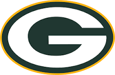
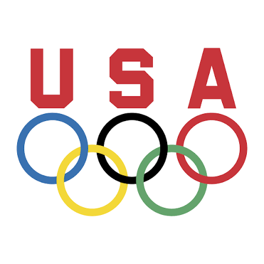
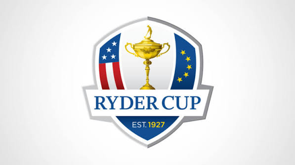
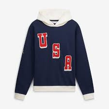

My Favorite Teams
- Green Bay Packers
- Olympic Team USA
- USA Ryder Cup Team
- USA Presidents Cup Team


Why I Follow Them
I come from a long line of Packer fan, so it feels very natural team to root for even though I'm not really a football guy
I enjoy watching Team USA compete in the Olympics. Summer or Winter, there is something great about rooting for our guys and gals
Also for the Us verses Them tournaments of Pro golf. The Ryder Cup and the Presidents Cup, I always root for USA


I wasn't a LIV Golf guy. There were some indiviuals I like but never felt a desire to root for a team